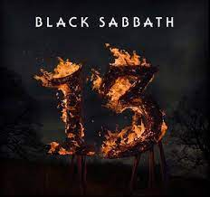
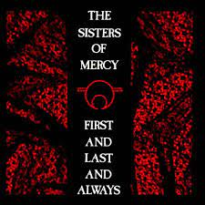
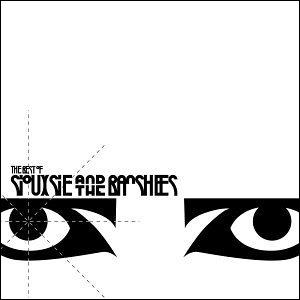

Rammstein
Music: Sonne, from album Made in Germany, by Rammstein
Black Sabbath
Music: God is Dead?, from album 13, by Black Sabbath

Sisters of Mercy
Music: Black Planet, from album First and Last and Always, by Sisters of Mercy

Siouxsie and the Banshees
Music: Kiss Then For Me, from album The Best Of, by Siouxsie and the Banshees
